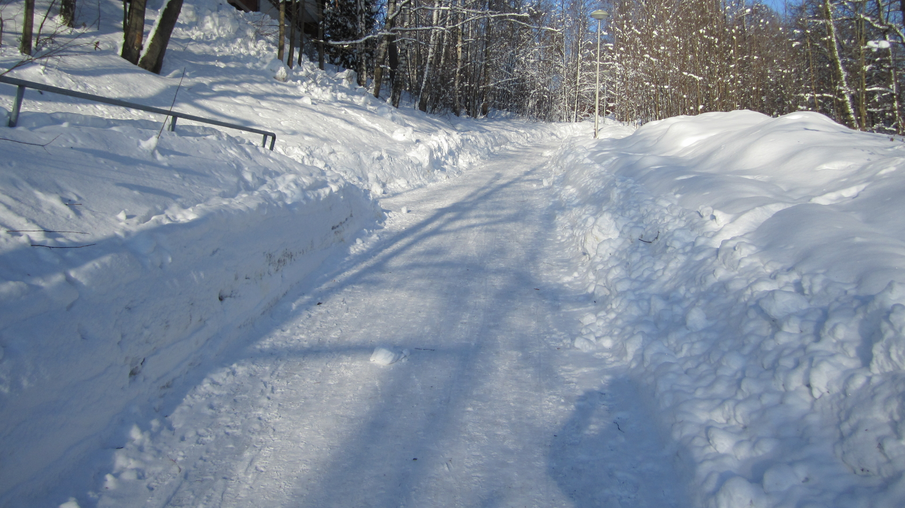

| Level 3 (Stockholm) |
TOC |
österut |
Level 2 |
index |
A10 |
Stationen ligger söderom färjefästet och vid E18. Så länge det ej finns järnväg fram är beräkningarna byggda på trafiken längs E18. Kapellskär-Karis banans spårbredd är den samma som i övriga Sverige, varför en fortsättning från det svenska tågnätet mot Finland är möjlig, alltså om järnvägsnätet byggs ut till Kapellskär.
Tanken att fortsätta E18 "ut i havet" såsom lösningen är gjord i Fehmar sund känns omöjlig. I Fehmarsund byggs ej tunneln på över 60m djup och på en sträcka på cirka 80 km (beroende på hur tunneln dras). Alternativet bro såsom Ölandsbron eller Öresundsbron verkar även dubiösa med ett Ålandshav på mellan 200 till 300m djupt utom på just den sträckning som här i presentationen är vald. Mot bro alternativet står även pack isen under vintern, ett mindre problem mera söderut. För att även göra pack isen problemet värre så är vanligaste vindriktningen sydväst och en sydvästan som driver hela isfältet från Rügen mot Åland och denna Ålandsbro. Om man byggde en brolösning borde man ej välja överhuvud Åland som mål utan längs tröskeln för Ålandshav. Enligt sjökortet sträcker sig "grunt vatten" ända till Hangö med sträckningen av Yxlan, Västra och Östra Tröskeln, Haldersboj, Kökarören, Utö, Jurmo, Rosalalandet, Hangö. Verkligen en drömmarnas motorväg men...
Vägen E18 slutar som väg i Kapellskär och om vi skall ha med bilen måste biltransport vagnar finnas tillgängliga så att bilen kommer med vidare på resan. Tågtransport för bilen borde ordnas åtminstone till Lemlands station och till Karis station. Lösningen är en biltransport skyttel, alltså ett tåg med bilvagnar som kör fram och tillbaka sträckan Kapellskär - Lemland - Karis. Egentligen borde det utredas om skytteln kunde köras helt automatiskt alltså utan personal. Vad som även borde utredas om på och avlastning av skytteln kan automatiseras. Planen är att skytteln startar på fasta tider och körs till Karis, respektive Kapellskär och dygnet runt sju dagar i veckan. Antalet avgångstider under lågtrafiktid är t.ex. en gång varannan timme, avgångarnas antal kan ökas vid behov. Antal bilvagnar kan även ökas vid behov. Resultatet blir något som närmar sig den service som en vägförbindelse kan ge.
Persontågtrafik betyder trafik med vanligt tåg och tidtabellerna måste göras så att tågen avgår med beaktande av biltransport skytteln.Även godstrafiken kräver sin del av banan och trafiken bör planeras in beaktande av persontrafiken och bilskytteltrafiken.
(Under en "kall bild" som inget har med saken att göra, huuu...)
